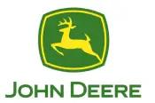

Perfiles de calidad e ingenieríaque tu RH no encuentra.Al costo que sí puedes pagar.
Llevamos 19 años operando calidad dentro de plantas automotrices. Conocemos a estos profesionales porque trabajamos con ellos todos los días. Eso nos permite reclutarlos más rápido y a menor costo que un headhunter tradicional.
Respuesta de un especialista en menos de 24 horas · Sin compromiso
≤24 hrs
tiempo de respuesta
Cuéntanos qué posición necesitas
Llena el formulario y un asesor especializado te contactará en menos de 24 horas con un plan para tu vacante.
Desliza
+0
años especializados en manufactura automotriz
≤24 hrs
tiempo de respuesta a tu vacante
Networking
que no está en bolsas de trabajo
Garantía
con período definido por puesto
Operamos calidad dentro de plantas que no toleran fallas

CALIDAD◆INGENIERÍA DE PROCESO◆SQA / SQE◆RED X · 8D · 6σ◆APQP / PPAP◆GD&T◆LEAN · SIX SIGMA◆SQE BILINGÜE◆
CALIDAD◆INGENIERÍA DE PROCESO◆SQA / SQE◆RED X · 8D · 6σ◆APQP / PPAP◆GD&T◆LEAN · SIX SIGMA◆SQE BILINGÜE◆
Perfiles que cubrimos
Reclutamos los perfiles que RH no encuentra
Por nuestra operación diaria conocemos y administramos estas áreas. No buscamos en portales — contactamos directamente a profesionales que hemos visto trabajar en piso.
Calidad
Gerentes de Calidad · Ingenieros de Calidad · Calidad Proveedores (SQA/SQE) · Expertos en solución de problemas (Red X, 8D, 6σ)
Ingeniería / Manufactura
Ingenieros de Proceso · Ingenieros de Manufactura · Especialistas en lanzamiento (APQP, PPAP) · GD&T · Lean / Six Sigma
Operaciones / Planta
Gerentes de Operaciones · Gerentes de Planta · Jefaturas de área · Directores de Operaciones
Recursos Humanos
Gerentes de RH · Gerentes de Reclutamiento · Directores de Talento · Perfiles bilingües para operación MX + EUA
¿Por qué Labor Mexicana?
No somos headhunters. Somos la industriareclutando para la industria.
01
19 años dentro de plantas, no en bolsas de trabajo
No buscamos en LinkedIn como un headhunter. Conocemos a estos profesionales personalmente porque los supervisamos, capacitamos y operamos con ellos en plantas automotrices de todo México. Ese networking no se compra en un portal — se construye en piso, turno tras turno, durante 19 años.
02
Mismo perfil, menor costo
Porque estos perfiles son nuestra operación diaria, te los entregamos sin la estructura inflada de un headhunter premium. No necesitamos 3 meses ni un fee de 3 sueldos. El resultado: un candidato que realmente sabe lo que hace, a un costo acorde al mercado.
03
Garantía real: si no funciona, buscamos de nuevo
Garantía con período definido por nivel de puesto. Si el candidato no se queda o no cumple el perfil, reactivamos la búsqueda sin costo adicional. Y la validación no es solo un CV: estudios socioeconómicos profundos, referencias laborales y vecinales, historial INFONAVIT y de demandas laborales.
↻
El círculo virtuoso: cada profesional de calidad que colocamos en tu planta conoce nuestro servicio de BPO. Hoy te reclutamos a tu ingeniero de calidad — mañana él tiene un CS2 y nos llama para la contención.
Cómo funciona
De tu vacante al candidato correcto en 4 pasos
01
Cuéntanos la vacante
Llena el formulario con el perfil, nivel y presupuesto. Toma 3 minutos.
02≤ 24 h
Llamada con especialista
Un asesor que conoce tu industria te contacta para entender a fondo la posición y el contexto de tu planta.
03≤ 5 días
Te presentamos la terna
Candidatos pre-filtrados y validados, alineados al perfil. Sin rellenar con quien no cumple.
04
Selección y garantía
Tú validas al candidato final. Cerramos con garantía por período definido. Si no funciona, buscamos de nuevo.
Resultados
Lo que pasa cuando la industria recluta para la industria
Tier 1 · Bajío
Posición de Ingeniero de Calidad Proveedores cubierta en 5 días hábiles. Candidato sigue activo después de 12 meses.
OEM · Norte de México
Gerente de Calidad con experiencia en Red X identificado y presentado en menos de 48 horas. Contratado en la primera terna.
Arranque de planta · SLP
Posiciones clave de calidad e ingeniería cubiertas antes del SOP. Equipo completo para lanzamiento sin retrasos.
Tier 1 · EUA (Michigan)
SQE bilingüe colocado para operación binacional. Perfil validado con referencias cruzadas MX + EUA.
0+
años operando calidad dentro de las plantas más exigentes del continente.
Ese conocimiento de piso es justo por lo que encontramos talento técnico antes de que un reclutador generalista sepa dónde buscar.
No cargamos la estructura inflada de un headhunter premium. Como estos perfiles son nuestra operación diaria, no necesitamos 3 meses ni un fee de 3 sueldos — nuestro fee es competitivo frente al mercado para el mismo nivel de candidato.
Un especialista te contacta en menos de 24 horas, y normalmente presentamos una terna pre-filtrada y validada en un máximo de 5 días hábiles.
Un período de garantía definido por nivel de puesto. Si el candidato no se queda o no cumple el perfil, reactivamos la búsqueda sin costo adicional.
Estudios socioeconómicos profundos, referencias laborales y vecinales, historial INFONAVIT e historial de demandas laborales — además de nuestro conocimiento directo de cómo se desempeñan en piso.
Sí. Operamos en México con presencia en EUA (Texas, Michigan, California) para perfiles bilingües que atienden operaciones binacionales MX + EUA.
Esta página es solo para perfiles especializados. El volumen operativo por rotación se atiende con nuestro modelo RPO / BPO — te dirigimos a la página correcta.
Resultados
Lo que pasa cuando la industria recluta para la industria
★★★★★
Tier 1 · Bajío
Posición de Ingeniero de Calidad Proveedores cubierta en 5 días hábiles. Candidato sigue activo después de 12 meses.
★★★★★
OEM · Norte de México
Gerente de Calidad con experiencia en Red X identificado y presentado en menos de 48 horas. Contratado en la primera terna.
★★★★★
Arranque de planta · SLP
Posiciones clave de calidad e ingeniería cubiertas antes del SOP. Equipo completo para lanzamiento sin retrasos.
★★★★★
Tier 1 · EUA (Michigan)
SQE bilingüe colocado para operación binacional. Perfil validado con referencias cruzadas MX + US.
★★★★★
Tier 1 · Bajío
Posición de Ingeniero de Calidad Proveedores cubierta en 5 días hábiles. Candidato sigue activo después de 12 meses.
★★★★★
OEM · Norte de México
Gerente de Calidad con experiencia en Red X identificado y presentado en menos de 48 horas. Contratado en la primera terna.
★★★★★
Arranque de planta · SLP
Posiciones clave de calidad e ingeniería cubiertas antes del SOP. Equipo completo para lanzamiento sin retrasos.
★★★★★
Tier 1 · EUA (Michigan)
SQE bilingüe colocado para operación binacional. Perfil validado con referencias cruzadas MX + US.
★★★★★
Tier 1 · EUA (Michigan)
SQE bilingüe colocado para operación binacional. Perfil validado con referencias cruzadas MX + US.
★★★★★
Arranque de planta · SLP
Posiciones clave de calidad e ingeniería cubiertas antes del SOP. Equipo completo para lanzamiento sin retrasos.
★★★★★
OEM · Norte de México
Gerente de Calidad con experiencia en Red X identificado y presentado en menos de 48 horas. Contratado en la primera terna.
★★★★★
Tier 1 · Bajío
Posición de Ingeniero de Calidad Proveedores cubierta en 5 días hábiles. Candidato sigue activo después de 12 meses.
★★★★★
Tier 1 · EUA (Michigan)
SQE bilingüe colocado para operación binacional. Perfil validado con referencias cruzadas MX + US.
★★★★★
Arranque de planta · SLP
Posiciones clave de calidad e ingeniería cubiertas antes del SOP. Equipo completo para lanzamiento sin retrasos.
★★★★★
OEM · Norte de México
Gerente de Calidad con experiencia en Red X identificado y presentado en menos de 48 horas. Contratado en la primera terna.
★★★★★
Tier 1 · Bajío
Posición de Ingeniero de Calidad Proveedores cubierta en 5 días hábiles. Candidato sigue activo después de 12 meses.
¿Tu RH lleva semanas buscando un perfil técnico de calidad?
Déjanos mostrarte por qué lo encontramos primero. Cuéntanos el perfil y en menos de 24 horas un especialista de nuestra industria te contacta con un plan.